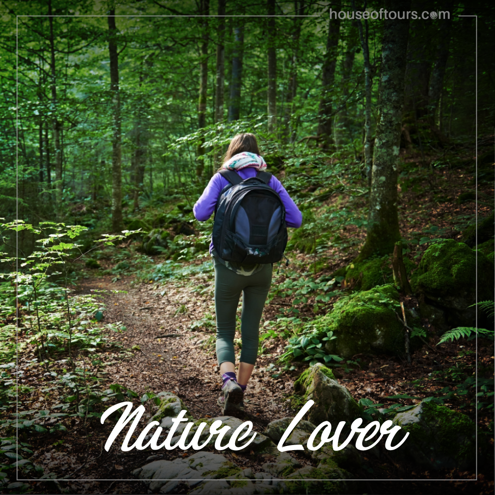
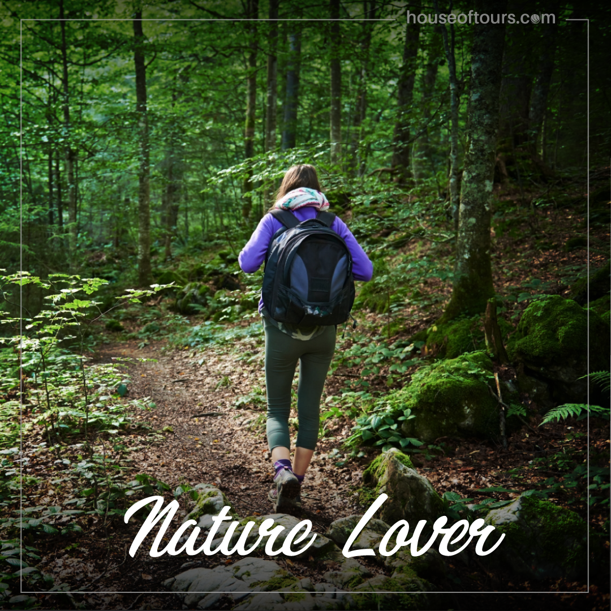

Breif Introduction
When you hear the words ‘National Park’ you might think of places like The Grand Canyon, Yosemite, and Yellowstone. When asked about National Parks, not many people will think about Sri Lanka. But as a matter of fact, Sri Lanka boasts some of the best National Parks in the world! Sri Lanka encompasses a total of 26 National Parks which collectively cover 5,734km2, which may not seem like a lot, but relative to the small size of Sri Lanka (65,610km2) this means that almost 9% of Sri Lanka’s total area consists of National Park. Sri Lanka’s National Parks are a haven of flora, fauna, and conservation, and are also extremely important in the survival of many animals such as the Sri Lankan Elephant
Main source
A history of conservation
Sri Lanka’s national parks are governed by the 1937 Fauna and Flora Protection Ordinance (No.2) and can also only be created, abolished or changed by ministerial order from the government. The first two official national parks in Sri Lanka are Yala and Wilpattu National Parks. Both were established on February the 25th 1938. All 26 of the Sri Lankan national parks cover a variety of different geography and habitats.
Main source


 
